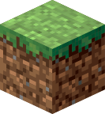
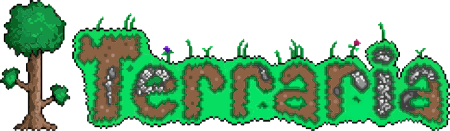

I was born on May 2nd, 2006 making me
I spent my high school years in Berlin, and in April of 2025 I will start my studies at the Technische Universität München
Ever since I was a little kid I have been fascinated by computers. According to my dad, he found notes with IP addresses written down by me when I was 6 years old.
I'm one of those people that has always known what they want to do, which I am indubitably grateful for. Due to my obsession with computers, my childhood was inextricably intertwined with the digital world. My gateway into technology was my dad's extremely old windows laptop, then a DS from my dad,
a WII from my mom, a 3DS, Xbox 360, a PS3, a Macbook, a PS4, an iMac, a Switch, and much more inbetween. Finally I landed on the ultimate form of computer: the
Video games are probably my favorite example of computer programming. Video games easily leave their closest ancestor (board games) in the dust. No doubt. I have been playing all sorts of video games since I was 6 years old. So I figured I know a thing or two about them. Therefore I'll give you a list of my 5 favorite video games of all time.

I grew up watching youtubers such as Stampylonghead, iBallisticSquid, PopularMMOs, CaptainSparklez, SSundee, and many more. Some of my best childhood memories are associated with playing Minecraft with friends, playing on servers such as The Hive, Mineplex, and Hypixel, and watching countless minecraft let's plays on youtube. I believe minecraft between the years 2014 and 2020 was and still is the best game of all time.

Terraria, minecraft's brother, has the best singleplayer sandbox gaming experience and progression system that I have ever seen. The game is extremely satisfying to play through. I had so much fun playing Terraria that I even started my own youtube channel by recording Terraria gameplay with my DS' camera.
Castle Crashers, a classic fighting game, has a funny story, cool character design, and an amazing soundtrack. I won't forget coming home after school, booting up my PS3 and playing Castle Crashers with a friend. Simply one of the best games when it comes to replayability.
Splatoon was my first shooter game, and it's turf war gameplay was extremely entertaining. On top of this the various types of weapons, and the unique reload system definitely makes the game worth a try. I played it on the Wii U and I always rented it from the local library. Therefore whenever I had the chance to play it I would sink tons of hours into it. Splatoon was also my first time being introducted to a ranked system in video games.
Rust, this game is a contreversial pick as it was both really fun but also quite annoying at times. The game is high risk high reward, but the mechanics and progression system back in the day were amazing. I played this game with a big group of friends during Covid and the game quickly became my most played game on steam. There were also plenty of hilarious moments, the game can be quite goofy sometimes.